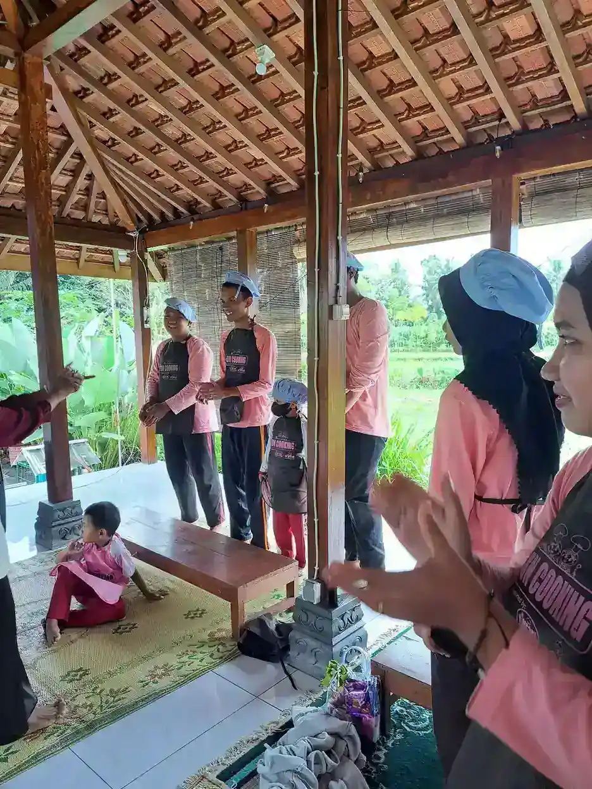

Keutamaan merawat anak yatim yang paling kuat dalilnya adalah kedekatan dengan Rasulullah SAW di surga, seperti dekatnya jari telunjuk dan jari tengah (HR. Bukhari no. 5304 dan Muslim no. 2983). Al-Quran menyebut memberi harta kepada anak yatim sebagai bagian dari kebajikan (QS. Al-Baqarah: 177) dan mencela orang yang menghardik mereka sebagai pendusta agama (QS. Al-Ma'un: 1-2). Merawat berarti menjaga harta, pendidikan, dan martabat mereka secara berkelanjutan, bukan hanya memberi santunan sesekali.
Anak yatim mendapat perhatian khusus dalam Islam. Al-Quran berulang kali menyebut mereka, dan Rasulullah SAW sendiri tumbuh sebagai seorang yatim. Artikel ini merangkum dalil keutamaan merawat anak yatim dari Al-Quran dan hadis sahih, masing-masing dengan nomor ayat atau nomor riwayat yang bisa Anda periksa sendiri, lalu membahas cara menyantuni yang benar dan cara memilih lembaga penyalur yang amanah.
Siapa yang Disebut Anak Yatim dalam Islam?
Anak yatim adalah anak yang ayahnya wafat sebelum ia mencapai usia baligh. Batas usia ini berdasar sabda Nabi SAW yang diriwayatkan Ali bin Abi Thalib:
لَا يُتْمَ بَعْدَ احْتِلَامٍ
"Tidak ada (status) yatim setelah baligh."
(HR. Abu Dawud no. 2873, dinilai sahih oleh Al-Albani. Lihat riwayat)
Jadi status yatim secara hukum berakhir saat anak baligh. Namun kebutuhan mereka akan pendidikan, pendampingan, dan perlindungan sering belum selesai pada usia itu, sehingga kepedulian sebaiknya tetap berlanjut. Anak yang kehilangan ibu atau kedua orang tuanya juga tetap layak mendapat santunan sebagai bagian dari berbuat baik kepada sesama yang membutuhkan.

Apa Keutamaan Merawat Anak Yatim Menurut Al-Quran?
Berikut ayat-ayat yang paling sering dijadikan rujukan. Terjemahan mengikuti terjemahan Kementerian Agama RI; tautan pada setiap ayat membuka Qur'an Kemenag.
1. Memberi harta kepada anak yatim adalah bagian dari kebajikan
"...akan tetapi sesungguhnya kebajikan itu ialah beriman kepada Allah, hari kemudian, malaikat-malaikat, kitab-kitab, nabi-nabi dan memberikan harta yang dicintainya kepada kerabatnya, anak-anak yatim, orang-orang miskin, musafir (yang memerlukan pertolongan) dan orang-orang yang meminta-minta..."
(QS. Al-Baqarah: 177. Lihat ayat)
Ayat ini menempatkan santunan kepada anak yatim sejajar dengan iman, shalat, dan zakat dalam definisi kebajikan (al-birr). Artinya, kepedulian kepada yatim bukan amalan tambahan, tetapi bagian dari gambaran orang yang benar imannya.
2. Mengurus urusan anak yatim secara patut adalah baik
وَيَسْأَلُونَكَ عَنِ الْيَتَامَىٰ ۖ قُلْ إِصْلَاحٌ لَّهُمْ خَيْرٌ ۖ وَإِن تُخَالِطُوهُمْ فَإِخْوَانُكُمْ
"Dan mereka bertanya kepadamu tentang anak yatim, katakanlah: 'Mengurus urusan mereka secara patut adalah baik, dan jika kamu bergaul dengan mereka, maka mereka adalah saudaramu.'"
(QS. Al-Baqarah: 220. Lihat ayat)
Kata kuncinya ishlah, yaitu memperbaiki keadaan mereka. Merawat anak yatim diukur dari apakah hidupnya menjadi lebih baik, bukan dari besar kecilnya pemberian.
3. Memberi makan anak yatim adalah sifat orang yang berbakti
وَيُطْعِمُونَ ٱلطَّعَامَ عَلَىٰ حُبِّهِۦ مِسْكِينًا وَيَتِيمًا وَأَسِيرًا
"Dan mereka memberikan makanan yang disukainya kepada orang miskin, anak yatim dan orang yang ditawan."
(QS. Al-Insan: 8. Lihat ayat)
4. Rasulullah SAW sendiri adalah seorang yatim
أَلَمْ يَجِدْكَ يَتِيمًا فَـَٔاوَىٰ
"Bukankah Dia mendapatimu sebagai seorang yatim, lalu Dia melindungimu?"
(QS. Ad-Duha: 6. Lihat ayat)
فَأَمَّا الْيَتِيمَ فَلَا تَقْهَرْ
"Sebab itu, terhadap anak yatim janganlah kamu berlaku sewenang-wenang."
(QS. Ad-Duha: 9. Lihat ayat)
Allah mengingatkan Nabi bahwa beliau pernah yatim lalu dilindungi, kemudian memerintahkan agar anak yatim tidak diperlakukan sewenang-wenang. Pengalaman menjadi yatim dijadikan alasan untuk berempati.
5. Tidak memuliakan anak yatim adalah sikap yang dicela
كَلَّا ۖ بَل لَّا تُكْرِمُونَ ٱلْيَتِيمَ
"Sekali-kali tidak (demikian), sebenarnya kamu tidak memuliakan anak yatim."
(QS. Al-Fajr: 17. Lihat ayat)
أَرَءَيْتَ ٱلَّذِى يُكَذِّبُ بِٱلدِّينِ فَذَٰلِكَ ٱلَّذِى يَدُعُّ ٱلْيَتِيمَ
"Tahukah kamu (orang) yang mendustakan agama? Itulah orang yang menghardik anak yatim."
(QS. Al-Ma'un: 1-2. Lihat ayat)
Dua ayat ini menunjukkan sisi sebaliknya: cara seseorang memperlakukan anak yatim dijadikan salah satu tanda benar atau tidaknya keberagamaan.
Apa Keutamaan Merawat Anak Yatim Menurut Hadis Sahih?
Bersama Rasulullah SAW di surga
أَنَا وَكَافِلُ الْيَتِيمِ فِي الْجَنَّةِ هَكَذَا وَأَشَارَ بِالسَّبَّابَةِ وَالْوُسْطَى، وَفَرَّجَ بَيْنَهُمَا شَيْئًا
"Aku dan orang yang menanggung anak yatim di surga seperti ini." Beliau mengisyaratkan dengan jari telunjuk dan jari tengah, dan merenggangkan keduanya sedikit.
(HR. Bukhari no. 5304 dari Sahl bin Sa'd, juga no. 6005. Lihat riwayat)
Inilah dalil utama keutamaan merawat anak yatim. Kata yang dipakai adalah kafil, yaitu orang yang menanggung dan mengurus kebutuhan anak itu, bukan sekadar pemberi sekali waktu.
Berlaku untuk yatim kerabat maupun orang lain
كَافِلُ الْيَتِيمِ لَهُ أَوْ لِغَيْرِهِ أَنَا وَهُوَ كَهَاتَيْنِ فِي الْجَنَّةِ
"Orang yang menanggung anak yatim, baik (yatim itu) kerabatnya maupun bukan, aku dan dia seperti dua jari ini di surga."
(HR. Muslim no. 2983 dari Abu Hurairah. Lihat riwayat)
Riwayat Muslim menambahkan keterangan penting: keutamaan ini berlaku baik anak yatim itu keponakan, cucu, atau anak orang lain yang sama sekali tidak ada hubungan keluarga.
Apa Ancaman bagi Orang yang Menzalimi Anak Yatim?
إِنَّ الَّذِينَ يَأْكُلُونَ أَمْوَالَ الْيَتَامَىٰ ظُلْمًا إِنَّمَا يَأْكُلُونَ فِي بُطُونِهِمْ نَارًا ۖ وَسَيَصْلَوْنَ سَعِيرًا
"Sesungguhnya orang-orang yang memakan harta anak yatim secara zalim, sebenarnya mereka itu menelan api sepenuh perutnya dan mereka akan masuk ke dalam api yang menyala-nyala (neraka)."
(QS. An-Nisa: 10. Lihat ayat)
Rasulullah SAW juga memasukkan memakan harta anak yatim ke dalam tujuh dosa yang membinasakan (as-sab'u al-mubiqat), sejajar dengan syirik, sihir, dan membunuh jiwa tanpa hak (HR. Bukhari no. 2766 dan Muslim no. 89. Lihat riwayat). Karena itu, siapa pun yang mengelola dana atau harta anak yatim, termasuk lembaga, memikul amanah yang berat.
Bagaimana Cara Menyantuni Anak Yatim yang Benar?
Dari dalil di atas, menyantuni anak yatim yang benar punya beberapa ciri:
- Menanggung, bukan hanya memberi sekali. Hadis memakai kata kafil (penanggung). Santunan rutin untuk kebutuhan pokok dan sekolah lebih dekat ke makna ini daripada bantuan sesaat.
- Memperbaiki keadaannya. Sesuai QS. Al-Baqarah: 220, ukurannya adalah perbaikan hidup anak: gizi, kesehatan, pendidikan, dan rasa aman.
- Menjaga hartanya. Warisan atau tabungan anak yatim harus dipisahkan dan dikelola untuk kepentingan anak itu sendiri (QS. An-Nisa: 10).
- Menjaga martabatnya. Jangan menghardik, mempermalukan, atau menjadikan anak sebagai objek foto dan konten demi penggalangan dana. QS. Ad-Duha: 9 melarang berlaku sewenang-wenang.
- Memprioritaskan pendidikan. Pendidikan membuat anak mandiri setelah status yatimnya berakhir saat baligh.
- Melibatkan keluarga yang merawat. Dukungan untuk ibu atau wali yang mengasuh sering lebih tepat sasaran daripada memindahkan anak dari keluarganya.
Bagaimana Memilih Lembaga Penyalur yang Kredibel?
Kalau Anda menyantuni lewat lembaga, pastikan dana benar-benar sampai. Beberapa hal yang bisa dicek sendiri:
- Badan hukum yang jelas. Yayasan resmi punya nomor Surat Keputusan pengesahan dari Kementerian Hukum. Minta nomornya dan cocokkan.
- Izin pengelolaan zakat bila menerima zakat. Menurut UU No. 23 Tahun 2011 tentang Pengelolaan Zakat, pengelolaan zakat dilakukan oleh BAZNAS dan Lembaga Amil Zakat (LAZ) yang memperoleh izin. Untuk zakat, pastikan penyalurnya BAZNAS, LAZ berizin, atau bermitra dengan keduanya.
- Laporan penyaluran. Lembaga yang amanah bersedia menunjukkan ke mana dana dipakai, minimal berupa laporan program berkala.
- Program yang terukur. Pilih program dengan sasaran jelas (misalnya biaya sekolah per anak per bulan) daripada janji umum tanpa rincian.
- Menghormati privasi anak. Lembaga yang baik tidak memajang wajah dan kisah pribadi anak secara berlebihan demi donasi.
Menyantuni Anak Yatim Melalui YUKA
YUKA (Yayasan Ukhuwah Kaffah Amanatullah) di Sleman, Yogyakarta, terdaftar sebagai badan hukum yayasan berdasarkan Keputusan Menteri Hukum dan HAM Nomor AHU-0004032.AH.01.04.Tahun 2024 (detail di halaman Tentang YUKA). Fokus kami adalah pendidikan inklusi bagi anak berkebutuhan khusus, dan sebagian dari mereka berstatus yatim atau berasal dari keluarga kurang mampu, sehingga menghadapi tantangan ganda.
Beberapa jalur untuk ikut menanggung pendidikan mereka:
- Lihat program YUKA, termasuk pendidikan inklusi dan program sosial.
- Donasi untuk YUKA secara rutin atau sekali waktu.
- Donasi pendidikan ABK untuk biaya sekolah dan terapi.
- Zakat pendidikan ABK bagi yang ingin menyalurkan zakat untuk pendidikan.
Riwayat Populer yang Lemah Sanadnya
Beberapa riwayat tentang anak yatim sering beredar di media sosial, tetapi sanadnya dinilai lemah oleh ulama hadis. Contohnya riwayat "sebaik-baik rumah kaum Muslimin adalah rumah yang di dalamnya ada anak yatim yang diperlakukan baik" (HR. Ibnu Majah no. 3679), yang dinilai dha'if (lihat penilaian riwayat). Maknanya tetap baik dan sejalan dengan ayat serta hadis sahih di atas, tetapi sebaiknya tidak disandarkan kepada Nabi SAW dengan kepastian. Dalil sahih tentang keutamaan merawat anak yatim sudah cukup kuat tanpa riwayat lemah.
Pertanyaan yang Sering Diajukan
Apa keutamaan merawat anak yatim yang paling utama?
Kedudukan dekat dengan Rasulullah SAW di surga, seperti dekatnya jari telunjuk dan jari tengah. Dalilnya hadis sahih riwayat Bukhari no. 5304 dan Muslim no. 2983.
Sampai usia berapa seorang anak disebut yatim?
Sampai baligh. Nabi SAW bersabda, "Tidak ada yatim setelah baligh" (HR. Abu Dawud no. 2873, sahih menurut Al-Albani). Setelah itu kepedulian tetap dianjurkan, tetapi statusnya bukan lagi yatim secara hukum.
Apakah menyantuni anak yatim harus dengan uang?
Tidak. Menanggung biaya sekolah, memberi makan (QS. Al-Insan: 8), menjaga hartanya, dan memperlakukannya dengan baik semuanya termasuk merawat anak yatim. Yang dicela adalah menghardik dan berlaku sewenang-wenang (QS. Ad-Duha: 9 dan Al-Ma'un: 2).
Bagaimana memastikan santunan lewat lembaga sampai ke anak yatim?
Cek badan hukum lembaga, izin pengelolaan zakat bila menerima zakat (UU No. 23 Tahun 2011), laporan penyaluran, dan kejelasan programnya sebelum berdonasi.
Rujukan
- Al-Quran dan terjemahan Kementerian Agama RI: quran.kemenag.go.id (QS. 2:177, 2:220, 4:10, 76:8, 89:17, 93:6, 93:9, 107:1-2)
- Shahih al-Bukhari no. 5304, 6005, 2766
- Shahih Muslim no. 2983, 89
- Sunan Abi Dawud no. 2873; Sunan Ibnu Majah no. 3679
- UU No. 23 Tahun 2011 tentang Pengelolaan Zakat (JDIH BPK)